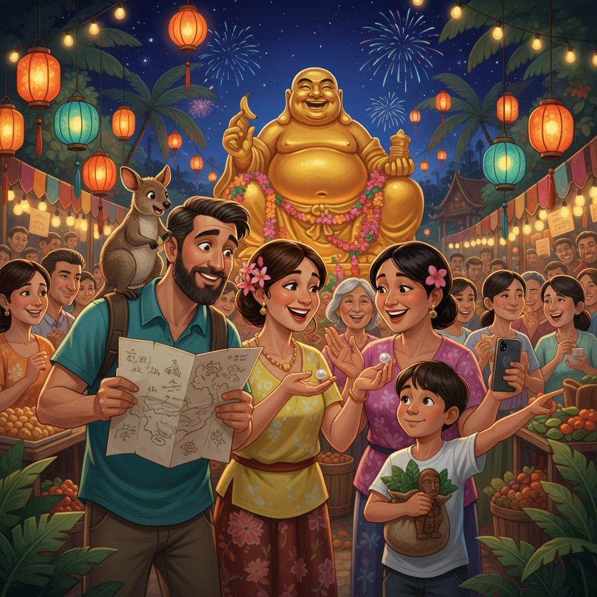

Аркадий Борисович Заржевский-Карамболин, инженер-мостостроитель с двадцатилетним стажем, был человеком, который планировал всё. Маршруты он составлял в Excel, чемоданы паковал по весовым категориям, а в отпуск брал с собой распечатанный план на каждый день с точностью до получаса.
Таиланд в его таблице значился как «Точка Б. Остров Ко Чанг. Бунгало №7. Режим: релакс с элементами культурного обогащения».
Скакун в таблицу не вписывался от слова совсем. Но Скакун никогда ни в какие таблицы не вписывался — ни с первого дня, как они подобрали его в зоопитомнике, ни сейчас, когда он, маленький рыжий хаос на мощных задних лапах, нёсся через пальмовую рощу с паспортами в сумке.
---
Всё началось в семь утра, когда Миша вышел на веранду и обнаружил, что Скакун куда-то пропал.
— Папа, — произнёс Миша тоном человека, сообщающего о приближении цунами, — Скакуна нет.
Аркадий оторвался от кофе.
— В каком смысле нет?
— В прямом. Нет его. А сетка, которой ты закрыл дверь, есть. Только дырка в ней тоже есть.
Аркадий посмотрел на дырку, потом на Мишу, потом снова на дырку. Дырка имела форму, подозрительно напоминающую контур мини-кенгуру.
— Эльвира! — крикнул он в сторону спальни.
Эльвира вышла с чашкой чая и мечтательным выражением лица — она всегда так выходила по утрам, будто только что видела сон о будущей скульптуре.
— Смотри на эту дырку, — сказал Аркадий.
— Какая органичная форма, — ответила Эльвира. — Почти как «Прорыв» Бранкузи.
— Это не «Прорыв», это Скакун прорвался наружу! И, кажется, унёс сумку с документами, потому что я вчера повесил её на крючок рядом с его лежанкой, и теперь её нет!
Пауза.
— И брошь бабушки Розы тоже там была, — тихо добавила Эльвира, и мечтательность с её лица немедленно испарилась.
Лиза, которая уже стояла в дверях с телефоном, нажала на запись.
— Доброе утро, подписчики. День второй на острове. Наш валлаби угнал документы. Это либо конец отпуска, либо начало лучшего контента в моей жизни. Ставьте плюс, если угадаете, что именно.
---
Аркадий вооружился картой острова (бумажной, разумеется — он не доверял телефонным навигаторам в тропиках) и разложил её на столе.
— Итак. Скакун ушёл ориентировочно в промежутке с двадцати трёх часов до семи утра. Скорость передвижения валлаби — до двадцати километров в час. Но ночью он, вероятно, двигался медленнее из-за темноты. Если предположить, что он пошёл по тропинке, а не через заросли...
— Аркаша, — мягко перебила Эльвира, — он валлаби. Он не пошёл «по тропинке». Он прыгал туда, где ему было интересно.
— Это не вносит определённости в расчёты.
— Именно поэтому расчёты здесь не помогут.
Миша уже стоял на ступеньках, изучая землю.
— Папа! Вот следы!
Аркадий посмотрел. Действительно — в утренней влажной земле чётко отпечатались характерные трёхпалые следы, уходящие в сторону деревни.
— Отлично! — Аркадий немедленно обрёл уверенность. — Следуем по следам. Организованно. Лиза, убери телефон.
— Я документирую поисковую операцию для блога.
— Ты идёшь в поисковую операцию.
— Я иду в поисковую операцию И документирую её для блога. Это называется многозадачность, папа.
---
Деревня встретила их запахом жареного риса, пением петухов и полным языковым барьером.
Аркадий остановил первого встречного — дедушку в конической шляпе, сидящего у своего дома.
— Excuse me. Have you seen a... a kangaroo? Small. Orange. With a bag?
Дедушка улыбнулся широкой беззубой улыбкой и что-то сказал по-тайски.
— Он говорит, что приветствует нас, — перевела Эльвира, хотя никакого тайского она не знала.
— Откуда ты знаешь?
— По интонации. Я работаю с формами и интонациями.
Аркадий решил использовать невербальные средства коммуникации. Он присел на корточки и начал изображать прыгающего кенгуру.
Дедушка восхитился.
Из-за угла появились двое детей, которые немедленно начали прыгать вместе с Аркадием.
Лиза снимала. «Подписчики, — шептала она в телефон, — мой отец, инженер-мостостроитель, прыгает перед тайским дедушкой. Это либо культурный обмен, либо нервный срыв. Время покажет».
Миша тем временем уже успел познакомиться с местной девочкой лет шести и получить от неё что-то завёрнутое в листок.
— Мама, смотри! Это камень с красными прожилками! Она говорит, что это волшебный.
— Клади в карман, — рассеянно ответила Эльвира, которая уже смотрела на дедушку с таким выражением, будто видела в нём будущую скульптуру. — Какие линии лица, — прошептала она. — Это же чистая бронза.
Дедушка что-то прокричал вглубь улицы. Оттуда появился молодой парень с мотоциклом и вполне сносным английским.
— Вы ищете прыгающий зверь? Рыжий, с карман на животе?
— Да! — хором сказала вся семья.
— Он был на рынке. Утром. Взял манго.
Аркадий закрыл глаза.
— Скакун украл манго.
— Скакун взял манго, — поправила Эльвира.
— Это называется «украл».
— Это называется «исследовал гастрономические традиции региона».
---
Рынок располагался в десяти минутах ходьбы — маленький, шумный, пахнущий специями и рыбой. Продавцы смеялись и показывали в сторону храма на холме.
— Говорят, зверь пошёл туда, — перевёл молодой парень, которого, как выяснилось, звали Нат и который, кажется, уже считал происходящее лучшим развлечением недели.
Тропинка к храму шла через заросли имбиря и дикого перца. Миша немедленно начал собирать всё, что попадалось под руку.
— Миша, ты несёшь уже восемь камней, три листа и что-то, что явно было частью гнезда.
— Папа, это коллекция острова Ко Чанг. Она должна быть полной.
— Коллекция острова не влезет в самолёт.
— Я возьму самое важное.
— Определение «важного» у нас с тобой разное.
— Пап, — сказал Миша серьёзно, — ты строишь мосты. Я собираю острова. Мы оба коллекционеры.
Аркадий открыл рот, потом закрыл. Эльвира сжала его руку.
— Мостостроитель и коллекционер островов, — тихо сказала она. — Сильная семья.
---
Храм оказался небольшим, ярко-красным, с золотыми крышами и монахом у ворот, который встретил их с выражением человека, которого уже ничем не удивишь.
Он сказал что-то Нату.
Нат засмеялся.
— Что? — напрягся Аркадий.
— Монах говорит: ваш зверь сидит внутри уже час. Монахи дали ему рис. Зверь отдал им... — Нат снова засмеялся, — ...какую-то бумагу. Они думали, это подношение.
Аркадий побледнел.
— Это был мой паспорт.
Они вошли во двор храма.
Скакун сидел посреди двора с видом абсолютно довольного существа. Вокруг него расположились трое монахов, которые рассматривали документы с искренним интересом. Один держал загранпаспорт Аркадия. Другой — страховку. Третий вертел в руках листок с отельным бронированием.
Эльвира ахнула и бросилась к Скакуну. Тот радостно прыгнул к ней навстречу и немедленно полез в её карман — на предмет чего-нибудь вкусного.
— Скакун, — сказала она, — ты невозможный.
Скакун чихнул.
— Брошь! — Эльвира запустила руку в сумку на животе у валлаби. — Она здесь!
Маленькая серебряная брошь с синим камнем — бабушки Розы, которая привезла её из Праги в пятьдесят восьмом году — лежала на дне сумки, завёрнутая, как ни странно, в манговую кожуру.
— Он её берёг, — сказала Лиза совершенно серьёзно, опустив телефон.
— Он её нёс как сокровище, — согласился Миша.
Аркадий забрал паспорт у монаха, поклонился, и монах поклонился в ответ с лучезарной улыбкой. Потом монах что-то сказал.
— Говорит, — перевёл Нат, — что зверь очень мудрый. Привёл вас в храм. Значит, вы должны были здесь оказаться.
Аркадий посмотрел на монаха, потом на Скакуна, потом снова на монаха.
— Это... не вписывается ни в какую логику.
— Аркаша, — сказала Эльвира, — не всё должно вписываться.
---
Они возвращались обратно уже во второй половине дня — через деревню, через рынок, где Нат купил всем кокосы и отказался брать деньги.
Оказалось, что в этот вечер в деревне праздник — День духов воды, с фонариками и лодочками на реке. Нат позвал их остаться.
Они остались.
Миша запустил три бумажных лодочки, одну из которых украсил «волшебным камнем с красными прожилками».
Лиза снимала фонарики, потом забыла снимать и просто смотрела, как они плывут.
Эльвира нашла в кармане блокнот и набросала силуэт дедушки в конической шляпе.
Аркадий сидел рядом с ней, держал брошь, и думал о том, что у бабушки Розы было бы что сказать по поводу сегодняшнего дня. Скорее всего, что-нибудь вроде: «Ну и что? Главное — нашли».
Скакун сидел у него на коленях, сложив передние лапки, и смотрел на воду.
— Ты доволен собой, — сказал ему Аркадий.
Скакун моргнул.
— Я так и думал.
---
В самолёте домой Лиза смонтировала ролик. Он набрал сорок тысяч просмотров за первые сутки. Называлось видео просто: «Как наш кенгуру привёл нас в буддийский храм и что из этого вышло».
В комментариях кто-то написал: «Это лучшее путешествие, в котором я никогда не был».
Аркадий прочитал комментарий, хмыкнул и открыл Excel — составлять план следующего отпуска.
В ячейке F12 он написал: «Непредвиденные обстоятельства — 3 часа».
Потом подумал и исправил на: «Непредвиденные обстоятельства — весь день».
Потом подумал ещё раз и написал просто: «Скакун».
Эльвира, глядя в иллюминатор, улыбнулась.
— Ты знаешь, что я поняла сегодня?
— Что?
— Что хаос — это просто порядок, который ты ещё не понял.
— Это звучит как оправдание Скакуну.
— Это звучит как наша семья.
Аркадий закрыл ноутбук.
— Знаешь что, — сказал он, — пожалуй, да.
Скакун в своей переноске завозился, устраиваясь поудобнее, и что-то звякнуло в его сумке.
Миша, сидевший рядом, немедленно заглянул внутрь.
— Папа. Скакун взял камень от монаха.
Пауза.
— Это называется «украл», — сказал Аркадий.
— Это называется «памятный сувенир», — сказал Миша.
— Это называется «наша семья», — сказала Эльвира.
Лиза нажала на запись.
— Подписчики, мы летим домой. Брошь нашли. Документы вернули. Папа внёс Скакуна в Excel. Следующая серия — когда мы придумаем, куда ехать в следующий раз. Ставьте лайк, если хотите, чтобы мы взяли Скакуна снова.
Лайков было много.
← Все рассказы